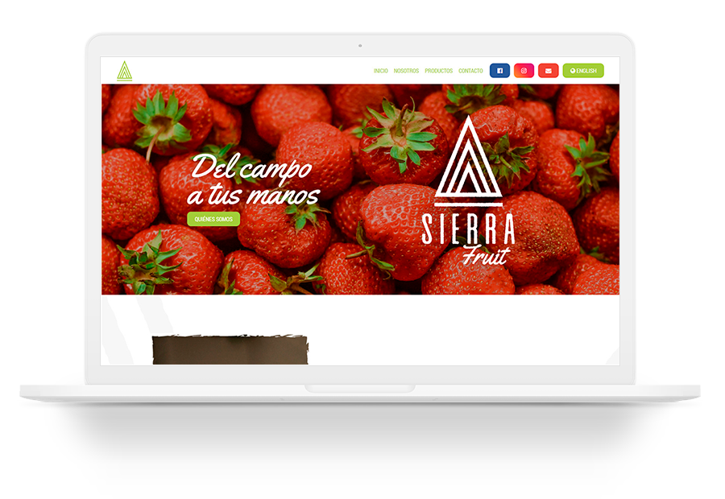

SIERRA FRUIT WEB
2019Sierra Fruit es una compañía que exporta pulpas y néctares con frutas colombianas. Su objetivo es brindar los productos lo más frescos posibles, combinando un proceso artesanal de recolección y selección, con una fórmula única que conserva la fruta de manera prolongada.
El sitio web debía ser sencillo, concreto, colorido y con la información precisa. Así que seleccionamos fotografías de fotografías y de los procesos de siembra y cosecha, mostrando así el lado humano y natural.
